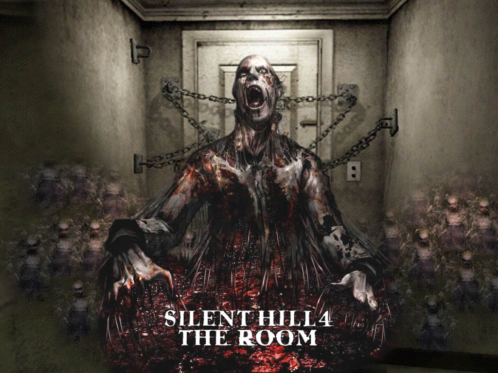

Silent Hill (サイレソトヒル Sairento Hiru?, en español Colina Silenciosa) es un videojuego de terror publicado por Konami y desarrollado por Team Silent, un grupo de Konami Computer Entertainment Tokyo. Fue lanzado para PlayStation en Norteamérica en enero de 1999, y en Japón y Europa más tarde ese mismo año. Silent Hill emplea una cámara en tercera persona y entornos tridimensionales en tiempo real; los desarrolladores usaron niebla y oscuridad para disfrazar las limitaciones del hardware. Asimismo, la obra presenta como protagonista a un personaje sin cualidades o destreza física destacables, en contraste con títulos anteriores del género..
¿Donde estamos?
Construído alrededor de las costas del lago Toluca, Silent Hill parece ser un pueblo de tamaño medio. Rodeado de colinas y ríos, se ha convertido en un destino para los pescadores y los navegantes. Silent Hill está dividido en dos, horizontalmente, con el lago por el medio. Debido a esto, uno puede encontrar el distrito de Paleville en la zona norte y South Vale en la orilla del lago opuesta. Cuando uno se acerca a Silent Hill desde el este a lo largo de la avenida Nathan, también conocida como County Road 73, se puede acceder a una plataforma de observación, ofreciendo una hermosa vista panorámica del lago Toluca y los bosques a su alrededor. Una prominente señal de bienvenida también se muestra cerca de una de las entradas del pueblo, que sirve para dar la bienvenida a los recién llegados..
Como se menciona anteriormente, Silent Hill se divide en dos distritos distintos, cada uno atendiendo a diferentes características demográficas de la población. Con cada nuevo juego que explora la zona de Silent Hill, su diseño general cambia, ya sea en forma de nuevas calles, nuevos edificios reemplazando a los viejos, o secciones enteras que se añaden a la misma. Esto se ve en Silent Hill: Homecoming y Silent Hill: Downpour.
Paleville - La sección norte del pueblo. Incluye Old Silent Hill, así como Central Silent Hill y la Zona turística.
South Vale - La sección sur del pueblo, por primera vez visto en Silent Hill 2 y nuevamente en Silent Hill 3..
Entregas
El siguiente título de la serie, Silent Hill 2, fue publicado en septiembre de 2001. PlayStation 2 fue elegida como plataforma inicial, por cuanto el productor del juego Akihiro Imamura, declaró que era en ese entonces «el enfoque del mercado». Versiones para Xbox y Microsoft Windows fueron lanzadas tiempo después. Con la salida de Toyama, la dirección de la segunda entrega quedó en manos de Masashi Tsuboyama.La historia fue concebida por Sato (además de seguir trabajando en las escenas CGI), y escrita por este y Hiroyuki Owaku. Sato estimó que el presupuesto para Silent Hill 2 fue entre 7 y 10 millones de dólares. A pesar de seguir ambientado en la misma ciudad que el título anterior, Silent Hill 2 no es una secuela directa de la primera entrega; se enfoca en el estado del pueblo y las repercusiones dejadas por el culto en él, tras los eventos del primer juego, además de proveer historia a la ciudad en sí.El protagonista de la trama es James Sunderland, quien entra en el pueblo tras recibir una carta escrita por su difunta esposa, diciéndole que ella lo está esperando en su «lugar especial» en Silent Hill. Allí, James deberá buscarla mientras descubre la verdad acerca de su muerte. Silent Hill 2 fue bien recibido en su lanzamiento, a pesar de que elogios mayores se produjeron en retrospectiva. Gracias a su historia, al uso de metáforas, de terror psicológico y de temas tabú, SH2 es considerado uno de los mejores juegos de terror y reconocido como uno de los mejores videojuegos de todos los tiempos. Según VGChartz, Silent Hill 2 ha vendido más de un millón y medio de copias hasta la actualidad.
Silent Hill 3 y 4: The Room fueron desarrollados casi simultáneamente; Team Silent se separó en dos grupos, cada uno llevando a cabo su propio juego. Silent Hill 4, conocido inicialmente como Room 302, tenía la intención de explorar otra dirección para la franquicia, mas no iba a formar parte de la serie principal. La dirección de Silent Hill 3 cayó en manos de Kazuhide Nakazawa, mientras que el guion siguió bajo el trabajo de Owaku. Masahiro Ito, director de arte y diseñador de los monstruos en anteriores entregas, continuó como tal en SH3. Ito y Owaku se retiraron de Team Silent después de SH3, así como Sato, quien lo hizo tras SH2. Silent Hill 4: The Room fue dirigido y escrito por Suguru Murakoshi, y su arte quedó a cargo de Tsuboyama. A pesar de que ambos proyectos estuvieron divididos en cuanto a personal, Akira Yamaoka siguió participando como director de sonido y compositor en ambas entregas.
Silent Hill 3 fue publicado en julio de 2003 para PlayStation 2; una versión para Windows fue lanzada tiempo después. Siendo la secuela directa del primer título, Silent Hill 3 toma lugar diecisiete años después de los sucesos ocurridos en la primera entrega. La historia se centra en Heather Mason, quien es arrastrada a la extraña realidad de una pesadilla tras experimentar un evento aterrador en un centro comercial. Ella termina descubriendo que es parte del plan del culto de Silent Hill y se encuentra a sí misma atrapada en un conflicto dentro de la ciudad. Silent Hill 3 tuvo en su mayoría críticas positivas, especialmente por su presentación, escenarios, gráficos y audio, así como todos los elementos del horror de supervivencia que se emplearon para el desarrollo de la trama del mismo.
Silent Hill 4: The Room fue lanzado en 2004 para PlayStation 2, Microsoft Windows y Xbox. A diferencia de títulos anteriores, The Room está ambientado en la ciudad ficticia de South Ashfield. SH4 incluye un sistema de juego alterado en comparación con anteriores entregas y toma elementos de las tramas de anteriores juegos. La historia sigue a Henry Townshend, quien se encuentra a sí mismo encerrado en su propio apartamento, hasta que un agujero aparece en la pared de su baño. El agujero lo conduce a varios mundos donde Henry desvela la conexión de su apartamento con un asesino en serie relacionado con el pueblo de Silent Hill. Tras su lanzamiento, The Room recibió críticas positivas, si bien no lo fueron tanto como las de sus predecesores; análisis criticaron el énfasis en el combate, lo que comprometía al terror de la obra. No obstante, críticas como las de GameSpot elogiaron la atmósfera del juego. Por su parte, Declaraciones oficiales de Konami han calificado las ventas del videojuego en América como «favorables».VGChartz señala que Silent Hill 4: The Room ha vendido más de 600 000 unidades.
Tras el lanzamiento de Silent Hill 4, Team Silent se disolvió en abril del año 2005. KCET se fusionó con la empresa matriz Konami ese mismo mes. Según un artista de Silent Hill: Homecoming, Team Silent fue disuelto por la propia Konami, pues esta «quería a alguien más para hacer los juegos». Todos los títulos posteriores a The Room fueron desarrollados por grupos no relacionados con el equipo original. Akira Yamaoka, sin embargo, siguió en su trabajo como compositor y director de sonido hasta 2009, año en que se retiraría.

La trama de los juegos indican que Silent Hill era un lugar sagrado para los nativos americanos que residían en el área, debido a un poder que contiene la ciudad. Tras la llegada de los colonos a América, el poder fue completamente distorsionado en el curso de la historia. Este poder da forma a los pensamientos más profundos de las personas, proyectando elementos tangibles de sus mentes inconscientes, sus pesadillas y de estados mentales. La mayoría de estas manifestaciones ocurren durante una deformación de la realidad, denominada como «otro mundo». Los personajes de la serie experimentan frecuentemente esta realidad alterada, en la cual las leyes de la física y el tiempo suelen no tener validez. Además, tras los eventos del primer Silent Hill, el pueblo se transforma en un catalizador para la manifestación de las mentes inconscientes de aquellos que guardan oscuridad en sus corazones: tal como se muestra en Silent Hill 2, las alteraciones de la realidad no son hostiles ni visibles ante personas inocentes. Solo aquellos con oscuridad en sus corazones pueden ver y ser atacados por las proyecciones de otro.
Harry Mason(SH1), James Sunderland(SH2), Cheryl Mason(SH3), Henry Townshend(SH4:TR), Travis Grady(SH:O), Alex Sheperd(SH:HC), Murphy Pendleton(SH:DP)
La empresa "Konami"
Konami Holdings Corporation (コナミホールディングス株式会社 Konami Hōrudingusu Kabushiki-gaisha?), o simplemente Konami, es una empresa de desarrollo de juguetes, cartas coleccionables, anime, tokusatsu, máquinas tragaperras y videojuegos. Fue fundada en 1969 como un negocio de reparación y de jukeboxes en Osaka, Japón, por Kagemasa Kozuki, quien es todavía su presidente y director ejecutivo.
El nombre "Konami" es una conjunción de los nombres Kagemasa Kozuki, Yoshinobu Nakama, Hiro Matsuda, y Shokichi Ishihara, quienes fueron los socios de Kozuki y los fundadores originales de Konami Industry Co., Ltd en 1973. Konami también significa «olas pequeñas». Tiene actualmente sus bases en Tokio y adicionalmente opera clubes de salud y ejercicio en Japón.
Konami ha sido el responsable de la creación de 6 de las franquicias más exitosas en la historia de los videojuegos: Castlevania, Contra, Metal Gear Solid, Silent Hill, Dance Dance Revolution (que fue el parte aguas para la creación de este tipo de juegos como Pump It Up de Andamiro) y Pro Evolution Soccer (desde su primer videojuego, International Superstar Soccer), así como ser la creadora de videojuegos exitosos, basados en series, caricaturas y películas, tales son los casos de los videojuegos de las caricaturas Tiny Toon Adventures, Animaniacs y Tortugas Ninja, así como el videojuego Batman Returns, basado en la película homónima, y haber desarrollado el considerado mejor videojuego de arcade de todos los tiempos: The Simpsons Arcade Game. Aunado a eso, también ha sido la creadora de la franquicia de cartas coleccionable de Yu-Gi-Oh!, basados en el popular ánime japonés, logrando un gran éxito (y ser la única que le pudo hacer frente al éxito del también juego de cartas Magic: El encuentro).
DESARROLLADO POR: André Gonzalez Torres (SlimAndreKor)
¿?
" El nombre de este pueblo es Silent Hill.
Aunque es conocido como un pueblo turístico escénico, es un lugar maldito donde sus antiguos habitantes fueron hace tiempo expulsados lejos, donde las ejecuciones brutales se llevaron a cabo y donde una misteriosa plaga demoníaca prevalece.
El pueblo se centra alrededor del lago Toluca, y un espesa niebla envuelve permanentemente toda la zona haciendo vagar desde la realidad los sueños de aquellos que lo visitan.
Y de acuerdo con aquellos que los han visto, también hay ocasiones en las que "cosas" que, naturalmente, no deben existir, aparecen.
Algunos incidentes ocurridos en este pueblo hasta el momento no han sido atendidos, dejando tras de sí un gran número de misterios.
Aquí y ahora, mirando hacia atrás, vamos a aclarar estos misterios uno por uno. "
-Book of Lost Memories